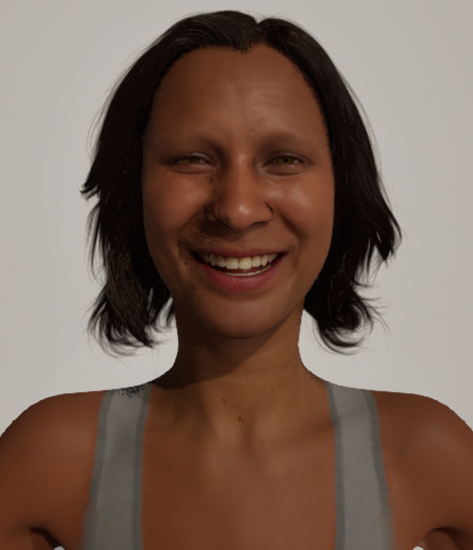
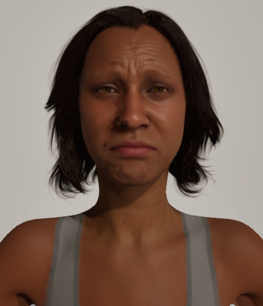
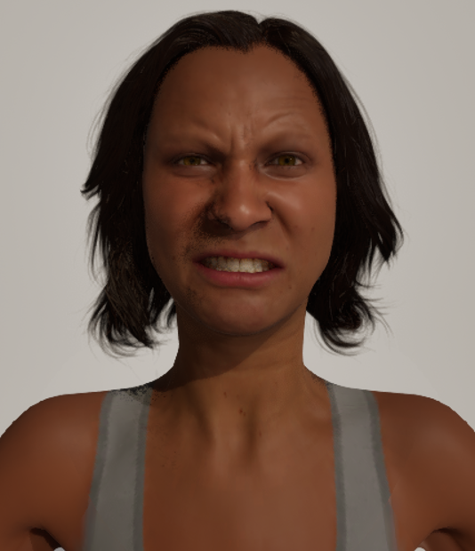
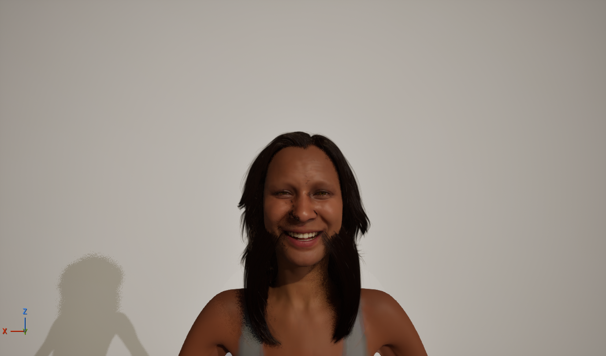
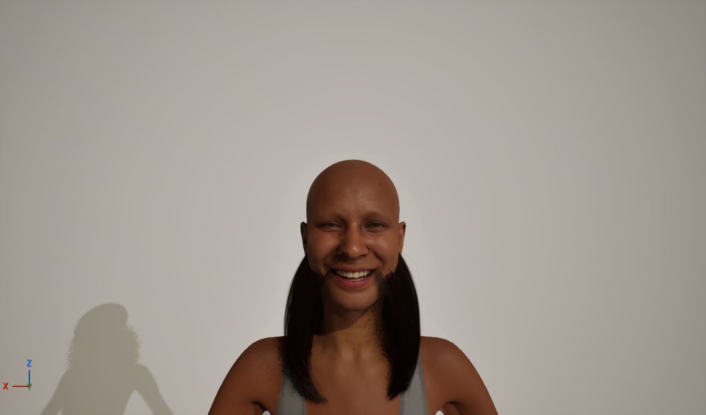
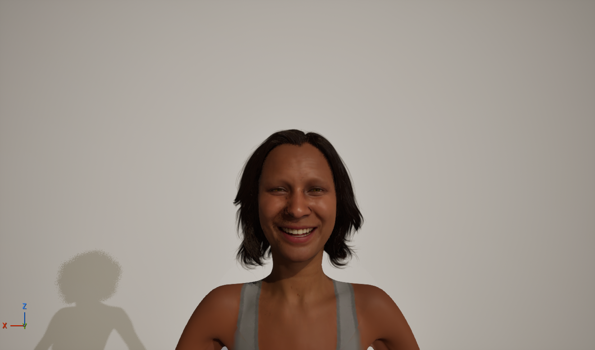

Reproduce the Mimi portrait pipeline for a new character, Sherry, and deliver three head-and-shoulders emotion portraits. Sherry is a generic MetaHuman dialed in MetaHuman Creator — she does not reproduce the original Daz face, and that was accepted up front. The interesting part is not the character; it is that once a MetaHuman Blueprint exists, the entire photo shoot — placement, hair and grooms, facial expression, and the captures themselves — can be run programmatically over MCP. This log records that automated pass and the three things it taught us.



Delivered as Sherry_{happy,sad,angry}_closeup.png (534×620) plus full-frame wides. Each expression is a MetaHuman facial pose evaluated by RigLogic; the hair, brows and lashes are grooms; the grey tank is the Creator wardrobe outfit, which reads only at the neckline in this crop.
After the editor restart the viewport was on /Temp/Untitled_1, so the first move was SceneTools.load_level("/Game/photobooth"). Mimi already lived here; she was moved aside to (-1000, 0, 0) so she was out of frame but still available.
Placed BP_MH_Sherry at the origin (0, 0, 0), yaw 180 so she faces the camera. Then LODSync.forcedLOD = 0 forces the highest-detail LOD — strand-based hair rather than the low-LOD hair cards — which matters for a close portrait.
A MetaHuman’s hair, brows and lashes are separate groom assets, each needing a groom + binding pair. Order matters: set the groom first, then the binding. Hair used Hair_M_Layered with physicsAsset = None; brows and lashes used their generic archetype bindings.
Hair.groomAsset = Hair_M_Layered
Hair.bindingAsset = Hair_M_Layered_..._Legacy02_..._Binding
Hair.physicsAsset = None
Eyebrows = Eyebrows_M_SlightArch (+ _Binding)
Eyelashes = Eyelashes_L_SlightCurl (+ _Binding)A freshly assembled MetaHuman Face component defaults to animationMode = AnimationBlueprint, which ignores a pose you hand it — the face just stays neutral. The fix is to switch it to AnimationSingleNode and point animationData.animToPlay at the pose. The RigLogic post-process still runs, so the expression is fully evaluated.
For each of the three poses: set the pose → run a short Simulate (warmupSeconds: 3) so RigLogic ticks and the face settles into the expression → StopPIE → capture the viewport non-PIE (the pose persists because SingleNode holds it). Then crop to a head-and-shoulders portrait and save.
The first captures showed scraggly hair strands crossing the cheeks, jaw and nose — a classic groom-misprojection look. The instinct was to blame the hair binding. That was wrong.
A prior session had left a second BP_MH_Sherry actor saved into the level, sitting at the exact same origin, wearing the misprojecting Hair_M_BobStraight bob. Two MetaHumans occupying the same spot read as one broken figure, not two. The tell: clearing every groom on the actor being edited left the artifacts on screen — they belonged to the other actor. find_actors(name="Sherry") returned both; deleting the bob duplicate made the hair render perfectly clean.



Hair_M_Layered now projects cleanly — full crown, natural hairline, zero float.Lesson: always run find_actors after the target level is actually loaded. The first Sherry search here ran while the editor was still on the post-restart Untitled level, came back empty, and a second actor got placed blind on top of the old one.
The per-character Hair_M_Layered binding we expected to use was never actually on disk. It didn’t matter: assigning Mimi’s Layered binding to Sherry projected flawlessly. Every MetaHuman face shares identical mesh topology, so a binding built with the correct groom source (SKM_Groom_Head_Legacy02) transfers cleanly to any character’s face. This is the same reason the brow and lash archetype bindings are generic.
Takeaway: for a standard Layered groom you can reuse any existing Legacy02-sourced binding rather than building and baking a fresh one per character.
There is no groom toolset over MCP, and the programmatic escape hatch (ProgrammaticToolset) exposes only tool orchestration plus a few safe standard-library modules — no unreal module — so you cannot script a GroomBindingAsset build. Binding creation stays a UI job. In practice you rarely need it, thanks to the reuse above.
Top-level object properties (like a groom’s groomAsset) accept a bare "Package.AssetName" path string. But a nested struct’s object field needs the full reference form, and the struct must be sent whole. The facial pose only takes effect when animationData is set as a complete struct with animToPlay given as a reference object:
Face.animationData = {
"animToPlay": { "refPath": ".../gpf_happy_s001.gpf_happy_s001" },
"bSavedLooping": true, "bSavedPlaying": true,
"savedPosition": 0, "savedPlayRate": 1
}Passing animToPlay as a bare string silently no-ops. Also: toolset names need their full paths (e.g. editor_toolset.toolsets.scene.SceneTools), and find_actors requires name, tag and collision_channels even when you only care about the name.